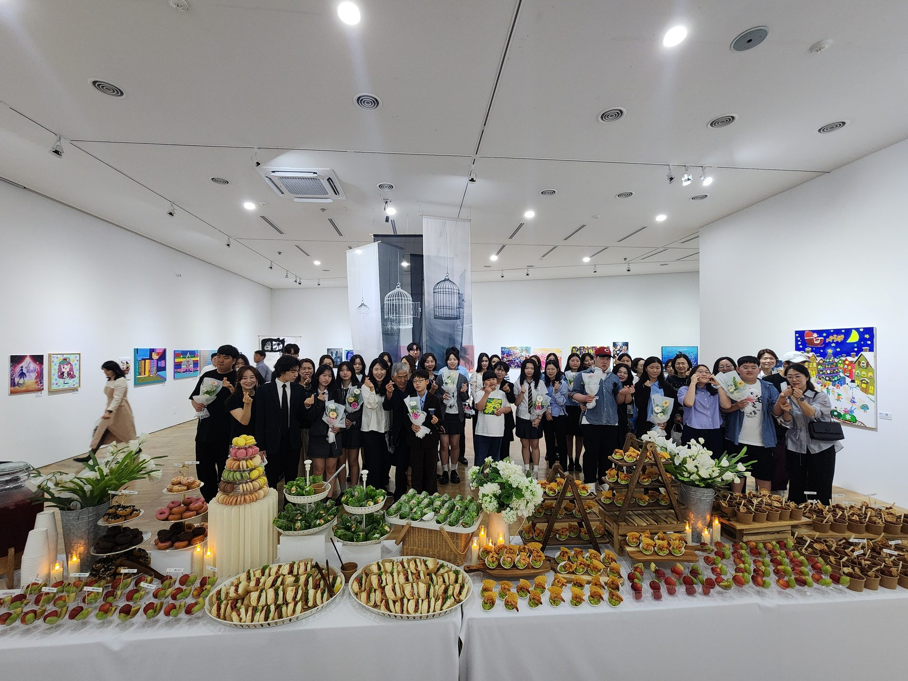

Art Beyond Some Thresholds
Art that moves beyond representation, toward genuine co-creation.
Based on Jeju Island, ABST brings together high school art students and local autistic/disabled youth artists to build exhibitions rooted in real collaboration.

Our Mission
ABST's mission is to expand global awareness of autism spectrum disorder and other learning disabilities by creating art exhibitions that focus on collaboration between high school art students and local youth autistic/disabled artists. Through these partnerships, we seek to move beyond representation toward genuine co-creation that involves in-depth appreciation from an artistic perspective. Our acronym signifies that personal expressions and their diverse media transcend the artificial boundaries set by specific disabilities.
Where We Work
ABST is based on Jeju Island, South Korea, with members active across four schools in the United States and South Korea. There have been two annual ABST Exhibitions to date, with the third planned for May 2026 at the Jeju International Peace Centre. Each exhibition also features a related virtual interactive space, developed to match that year's theme and to let the work reach beyond whoever can visit in person.
How We Work
Every exhibition pairs students from our partner schools with local autistic and disabled youth art creators. Rather than simply displaying work side by side, artists collaborate directly — some pieces are created in direct response to a partner's work, and select collaborative pieces are exhibited together for simultaneous viewing. The goal is genuine co-creation: an exchange of worldviews and methods of expression that neither artist could reach alone.
See the work for yourself
Browse project pages from past exhibitions, or read journal notes from students and artists along the way.